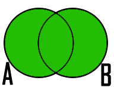

Contenidos
Tema anterior
Lectura 3 - Álgebra Relacional: Select, Project, Join
Lectura 3 - Álgebra Relacional: Select, Project, Join
En matemáticas, se denomina álgebra de conjuntos a las operaciones básicas que pueden realizarse con conjuntos, como la unión, intersección, etc. Un conjunto es una colección de objetos considerada como un objeto en sí. La Unión de dos conjuntos \(\text{A}\) y \(\text{B}\) es el conjunto que contiene todos los elementos de \(\text{A}\) y de \(\text{B}\). El símbolo \(\cup\) es el utilizado para representar Unión.
El operador Unión es conmutativo es decir \(\text{A} \cup \text{B} = \text{B} \cup \text{A}\). Cabe recordar que una operación es conmutativa cuando el resultado de la operación es el mismo, cualquiera que sea el orden de los elementos con los que se opera.
De manera análoga, la Unión de dos relaciones \(\text{R}\) y \(\text{S}\), es otra relación que contiene las tuplas que están en \(\text{R}\), o en \(\text{S}\), o en ambas, eliminándose las tuplas duplicadas. \(\text{R}\) y \(\text{S}\) deben ser unión-compatible, es decir, definidas sobre el mismo conjunto de atributo (\(\text{R}\) y \(\text{S}\) deben tener esquemas idénticos. Deben poseer las mismas columnas y su orden debe ser el mismo).
Notación en álgebra relacional
Si se realiza \(\text{R} \cup \text{S}\) es lo mismo que \(\text{S} \cup \text{R}\) , es decir se obtiene el mismo resultado. Esto debido a la propiedad de conmutatividad derivada de la álgebra de conjuntos.
Dadas las siguientes relaciones:
Aplicar el operador Unión:
Como se mencionó anteriormente, realizar la operación \(\text{Jefes} \cup \text{Ingenieros}\) daría como resultado la misma tabla anterior, debido a la propiedad de conmutatividad.
Volviendo a la analogía de álgebra de conjuntos, la diferencia entre dos conjuntos \(\text{A}\) y \(\text{B}\) es el conjunto que contiene todos los elementos de \(\text{A}\) que no pertenecen a \(\text{B}\).

Como se aprecia en las imágenes la operación Diferencia, en conjuntos, no es conmutativa, al igual que la resta o sustracción, operador aprendido en aritmética básica. Es decir, si se cambia el orden de los conjuntos a los que se aplica la operación Diferencia, se obtendrán resultados distintos. Por lo tanto:
De la misma forma la diferencia de dos relaciones \(\text{R}\) y \(\text{S}\), es otra relación que contiene las tuplas que están en la relación \(\text{R}\), pero no están en \(\text{S}\). \(\text{R}\) y \(\text{S}\) deben ser unión-compatible (deben tener esquemas idénticos).
Notación en álgebra relacional
Es importante resaltar que \(\text{R} - \text{S}\) es diferente a \(\text{S} - \text{R}\).
Empleando las mismas tablas dadas en el ejemplo anterior, realice \(\text{Ingenieros} - \text{Jefes}\) y \(\text{Jefes} - \text{Ingenieros}\):
Como se puede apreciar, ambas operaciones dieron como resultado distintas relaciones, tal como se había mencionado anteriormente.
En álgebra de conjuntos la Intersección de dos conjuntos \(\text{A}\) y \(\text{B}\) es el conjunto que contiene todos los elementos comunes de \(\text{A}\) y \(\text{B}\). El símbolo \(\cap\) representa la Intersección de dos conjuntos. Al igual que el operador Unión, Intersección es conmutativo, entonces se cumple que \(\text{A} \cap \text{B} = \text{B} \cap \text{A}\) .

De forma homóloga en álgebra relacional, Intersección define una relación que contiene las tuplas que están tanto en la relación \(\text{R}\) como en \(\text{S}\). \(\text{R}\) y \(\text{S}\) deben ser unión-compatible (mismos atributos y mismo orden).
Notación en algebra relacional
Si se realiza \(\text{R} \cap \text{S}\) es lo mismo que \(\text{S} \cap \text{R}\), es decir se obtiene el mismo resultado, se puede decir que Intersección es conmutativa.
Equivalencia con operadores anteriores
Utilizando las mismas tablas del ejemplo anterior, encontrar la Intersección de la tabla de \(\text{Ingenieros}\) con la de \(\text{Jefes}\):
Importante
Para aplicar estas operaciones a relaciones, necesitamos que \(\text{R}\) y \(\text{S}\) sean unión-compatible:
- \(\text{R}\) y \(\text{S}\) deben tener esquemas con conjuntos de atributos idénticos, y de tipos (dominios) para cada atributo deben ser las mismas en \(\text{R}\) y \(\text{S}\).
- Antes de computar el conjunto-teórico unión, intersección, o diferencia de conjuntos de tuplas, las columnas de \(\text{R}\) y \(\text{S}\) deben ser ordenadas para que el orden de los atributos sean los mismos para ambas relaciones.
Algunas de las operaciones que se han descrito en las lecturas 3 y 4, pueden ser expresadas en términos de operadores de algebra relacional. Por ejemplo, la intersección puede ser expresada en términos de conjuntos de diferencia: \(\text{R} \cap \text{S} = \text{R} - (\text{R} - \text{S})\). Es decir, si \(\text{R}\) y \(\text{S}\) son dos relaciones con el mismo esquema, la intersección de \(\text{R}\) y \(\text{S}\) puede ser resuelta restando primero \(\text{S}\) de \(\text{R}\) para formar una relación \(T\) que consiste en todas aquellas tuplas en \(\text{R}\) pero no en \(\text{S}\). Cuando se resta \(\text{T}\) de \(\text{R}\), dejamos solo esas tuplas de \(\text{R}\) que están también en \(\text{S}\).
Hay dos maneras en las cuales podemos usar expresiones de algebra relacional para expresar restricción:
1. Si \(\text{R}\) es una expresión de algebra relacional, entonces \(\text{R} = 0\) es una restricción que dice “El valor de \(\text{R}\) debe ser vacio,” o equivalentemente “No hay tuplas en el resultado de \(\text{R}\).”
2. Si \(\text{R}\) y \(\text{S}\) son expresiones de algebra relacional, entonces \(\text{R} \subset \text{S}\) es una restricción que dice “Cada tupla en resultado de \(\text{R}\) debe estar también en resultado de \(\text{S}\).” Por supuesto, el resultado de \(\text{S}\) puede contener tuplas adicionales no producidas en \(\text{R}\).
Estas formas para expresar restricción son de hecho equivalentes en lo que pueden expresar, pero algunas veces uno de los dos es más clara o más sucinta. Es decir, la restricción \(\text{R} \subset \text{S}\) pudo también ser escrito \(\text{R} - \text{S} = 0\). Para ver por qué, observe que si cada tupla en \(\text{R}\) está también en \(\text{S}\), entonces seguramente \(\text{R} - \text{S}\) es vacío. A la inversa, si \(\text{R} - \text{S}\) no contiene tuplas, entonces cada tupla en \(\text{R}\) debe estar en \(\text{S}\) (o de lo que sería \(\text{R} - \text{S}\)).
Por otra parte, una restricción de la primera forma, \(\text{R} = 0\), también pudo haber sido escrita como \(\text{R} \subset 0\). Técnicamente, \(0\) no es una expresión de algebra relacional, pero ya que hay expresiones que evalúan a \(0\), tal como \(\text{R} - \text{R}\), no hay nada malo en usar \(0\) como una expresión de algebra relacional. Tenga en cuenta que estas equivalencias sostienen se sostienen incluso si \(\text{R}\) y \(\text{S}\) son bolsas, dado que hacemos la interpretación convencional de \(\text{R} \subset \text{S}\): cada tupla \(t\) aparece en \(\text{S}\) al menos tantas veces como aparece en \(\text{R}\).
Las relaciones base que forman la base de datos de un video club son las siguientes:
En las relaciones anteriores, son claves primarias los atributos y grupos de atributos que aparecen en negrita. Las claves ajenas se muestran en los siguientes diagramas referenciales:
Resolver las siguientes consultas mediante el álgebra relacional (recuerde que en la lectura 3 también se dieron algunos operadores de álgebra relacional):
1.1. Seleccionar todos los socios que se llaman: “Charles”.
Respuesta
1.2. Seleccionar el código socio de todos los socios que se llaman: “Charles”.
Respuesta
1.3. Seleccionar los nombres de las películas que se encuentran en lista de espera.
Respuesta
1.4. Obtener los nombres de los socios que esperan películas.
Respuesta
1.5. Obtener los nombres de los socios que tienen actualmente prestada una película que ya tuvieron prestada con anterioridad.
Respuesta
1.6. Obtener los títulos de las películas que nunca han sido prestadas.
Respuesta
(todas las películas) menos (las películas que han sido prestadas alguna vez)
1.7. Obtener los nombres de los socios que han tomado prestada la película “WALL*E” alguna vez o que están esperando para tomarla prestada.
Respuesta
1.8. Obtener los nombres de los socios que han tomado prestada la película “WALL*E” alguna vez y que además están en su lista de espera.
Respuesta
Considere la base de datos con el siguiente esquema:
- \(\text{Persona}(\underline{\text{nombre}} \text{, edad, genero})\) : nombre es la clave.
- \(\text{Frecuenta}(\underline{\text{nombre, pizzeria}})\) : (nombre, pizzeria) es la clave.
- \(\text{Come}(\underline{\text{nombre, pizza}})\) : (name, pizza) es la clave.
- \(\text{Sirve}(\underline{\text{pizzeria, pizza}}\text{, precio})\): (pizzeria, pizza) es la clave.
Escribir las expresiones de álgebra relacional para las siguientes nueve consultas. (Precaución: algunas de las siguientes consultas son un poco desafiantes).
- Encuentre todas las pizzerías frecuentadas por al menos una persona menor de 18 años.
- Encuentre los nombres de todas las mujeres que comen pizza ya sea con champiñones o salchichón (o ambas).
- Encuentre los nombres de todas las mujeres que comen pizzas con los dos ingredientes, champiñones y salchichón.
- Encuentre todas las pizzerías que sirven al menos una pizza que Amy come por menos de 10 dólares.
- Encuentre todas las pizzerías que son frecuentadas por solo mujeres o solo hombres.
- Para cada persona, encuentre todas las pizzas que la persona come, que no son servidas por ninguna pizzería que la persona frecuenta. Devuelve toda dicha persona (nombre)/ pizza pares.
- Encuentre los nombres de todas las personas que frecuentan solo pizzerías que sirven al menos una pizza que ellos comen.
- Encuentre la pizzería que sirve la pizza más barata de salchichón. En el caso de empate, vuelve todas las pizzerías que venden las pizzas de salchichón más baratas.